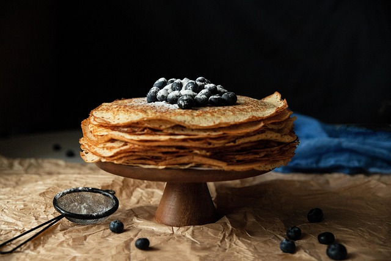

Fluffy pancakes with blueberry sauce recipe

Fluffy blueberry pancakes with a spiced blueberry sauce for one.
Ingredients
Pancakes
- 100g/3½oz self-raising flour
- ½ tsp baking powder
- 2 free-range eggs
- 60ml/2¼fl oz milk
- ½ punnet blueberries
- 2 tbsp icing sugar
- 25g/1oz butter
Blueberry sauce
- 4 tbsp red wine
- 4 tbsp sugar
- 2 cloves
- pinch mixed spice
- ½ punnet blueberries
Steps
- Place in a bowl the self-raising flour, baking powder, eggs and milk. Mix together to form a thick batter.
- Add the icing sugar and blueberries.
- Melt the butter in a frying pan and ladle in the blueberry pancake mix a ladleful at a time. Cook the pancakes until golden brown, on both sides.
- Stack the blueberry pancakes and leave to one side.
- For the blueberry sauce, in a pan add the red wine with the sugar, cloves, mixed spice and the blueberries.
- Simmer for four minutes, and take off the heat.
- Put the sauce through a sieve and remove the cloves.
- To serve, place the stack of pancakes in the middle of the plate and drizzle with the blueberry sauce.
Home